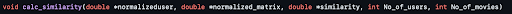
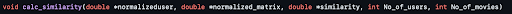

La Progression
-
L'algorithme
Pour cette partie, nous avons réussi à construire un système de recommandation de films en utilisant la technique de filtrage collaboratif avec les principales étapes suivantes :
-
Création d'une matrice utilitaire de notes entre les utilisateurs et les films.
-
Trouver la similarité du nouvel utilisateur (ou de l'utilisateur concerné) avec d'autres utilisateurs à l'aide de la similarité en cosinus centré (corrélation de Pearson).
 
 -
Le regroupement d'utilisateurs basé sur la similarité à l'aide de k signifie regroupement (K-means Clustering).

-
Prédiction de films à l'aide de la technique de filtrage collaboratif (factorisation matricielle de faible rang) basée sur les clusters obtenus à l'étape 3.
-
Les 10 meilleurs films recommandés seront imprimés en ligne de commande.
Résultat:
-
-
La communication
Pour cette partie, nous avons parlé de notre projet autour de nous et nous avons créé une page sur l’application CoMeet, réalisée par un étudiant d’Epita, qui permet de partager nos projets. Ainsi, les utilisateurs peuvent voir l’avancée du développement de l’application à travers des posts.

Nous avons également créé des comptes sur les réseaux sociaux représentant l'application. Il est possible de trouver les liens dans les contacts, où nous trouvons également notre email pour nous contacter, ou encore sur la bande en bas du site.
-
Les données
Grâce à Thuy-Trang nous possédons un dataset de plus de 9000 films avec leurs genres et des notes sur 5 donner par des utilisateurs. Ce dataset va permettre d'entraîner l’algorithme de recommandation.
Jusqu'à présent toutes les données étaient stockées sous le format csv mais pour être en accord avec le serveur et faciliter les requêtes Jimmy a converti tous les fichiers dans une base de données SQL.
A l’aide d’un code en python, parser les données pour ensuite exécuter la requête a était très simple et rapide.Voici une représentation graphique de la base de données, avec les 4 tables qui les composent:

-
L'interface
Alban est celui qui a réalisé cette partie en intégralité, avec l’aide de Jimmy pour le design initial.
Nous avons choisi pour la partie design d’utiliser l’application Figma qui a pu nous permettre d’obtenir une idée claire de la direction vers laquelle nous souhaitions amener le projet.
Une fois cette direction établie, nous avons choisi d’utiliser l’application glade pour la création plus concrète de l’application. Ce choix est principalement dû au fait que la bibliothèque Gtk possède des moyens de directement récupérer les données de fichiers glade afin d’encoder les différentes fonctionnalités et éléments graphiques que nous souhaitions réaliser pour cette interface. Grâce à cela, notre travail fut grandement simplifié, malgré quelques bugs venant nous ralentir.
Alors que le travail avec glade nous permettait de créer rapidement boutons, étiquettes et tout autre élément d’interface dons nous avions besoin, la partie en C, éditée avec VSCode et VIM, consistait principalement à connecter ces différents éléments, que ce soit entre eux ou avec notre serveur et notre algorithme, pour obtenir un tout cohérent et fonctionnel.
Plus précisément, nous avons d’abord mis en place une fenêtre principale permettant de se connecter à son compte, chercher un film et voir toutes les informations le concernant. Nous avons ensuite ajouté plusieurs fenêtres secondaires, au nombre de quatre, servant chacune une fonction différente.
La première est la fenêtre de connexion. Comme son nom l’indique, elle permet de rentrer son nom d’utilisateur ainsi que son mot de passe afin d’accéder à son espace. Il y a également sur cette fenêtre un bouton permettant de rediriger vers la fenêtre de création de compte.
La fenêtre de création de compte, elle, comporte les espaces pour entrer le nom d’utilisateur voulu, le mot de passe ainsi que sa confirmation. Dans le cas où le nom d’utilisateur est déjà en usage, ou si le mot de passe et sa confirmation ne sont pas identiques, la fenêtre affichera un message d’erreur sous la forme d’un troisième popup.
La dernière fenêtre est un popup d’information, indiquant simplement que la déconnexion a été un succès.
-
Le réseau
Cette partie a été entièrement réalisé par Jimmy.
Nous avons tout d’abord choisi d'implémenter un serveur avec le protocole TCP vu durant nos cours de Programmation.
Comme expliqué dans le rapport de soutenance n°1 nous utilisions une fonction : select() qui permettait de surveiller une liste de descripteur de fichier dans le but de garder tous les utilisateurs connectés en permanence au serveur. Mais après réflexions et la mise en place des queues partagées pour attribuer des threads a chaque nouvelle connexion, nous nous sommes rendu compte que les utilisateurs avaient besoin de se connecter seulement pour récupérer des informations dans la database ou bien en envoyer.
Nous nous sommes donc rabattus sur une architecture plus simple où chaque nouvel utilisateur qui se connecte se voit attribuer un Thread, s' il y en a de disponible, et va pouvoir se connecter. Une fois connectés pour la première fois le client retient les informations et pour toute futur demande elles sont envoyées en amont des autres requêtes pour prouver au serveur que le client est bien connecté.
Nous sommes conscients que le serveur présente de nombreuses failles de sécurité mais pour ce projet qui restera privé nous avons décidé de ne pas trop nous pencher sur la question de la sécurité des données. Par exemple, les mots de passe sont stockés en “clair” dans la base de données c'est-à- dire qu’ils ne sont pas cryptés ce qui pourrait être un point a modifier pour un futur projet.
-
Le site web
Tout d’abord, avant de commencer à écrire des lignes de code pour le site web, Sarah, la responsable de cette partie a dû voir les bases de html et de css puisque c’est un sujet n'étant pas présent en cours. Ensuite, nous commencions enfin à écrire quelques lignes. Au début, nous cherchions au moins à avoir un site fonctionnel minimum donc nous utilisions seulement html.
Ensuite, nous avons rajouté du code css afin de faire la mise en page. Sans celà, notre site n'aurait aucune décoration, ce qui n'attirait pas le regard de l'utilisateur. Aussi, nous avons pensé utiliser JavaScript pour notre site, cependant, nous n'avons pas réussi à bien manier cet outil... Donc nous avons décidé d'utiliser seulement du code html et css.
Nous pouvons voir la dernière version sur le site en lui-même.
-
L'installateur / Le lanceur